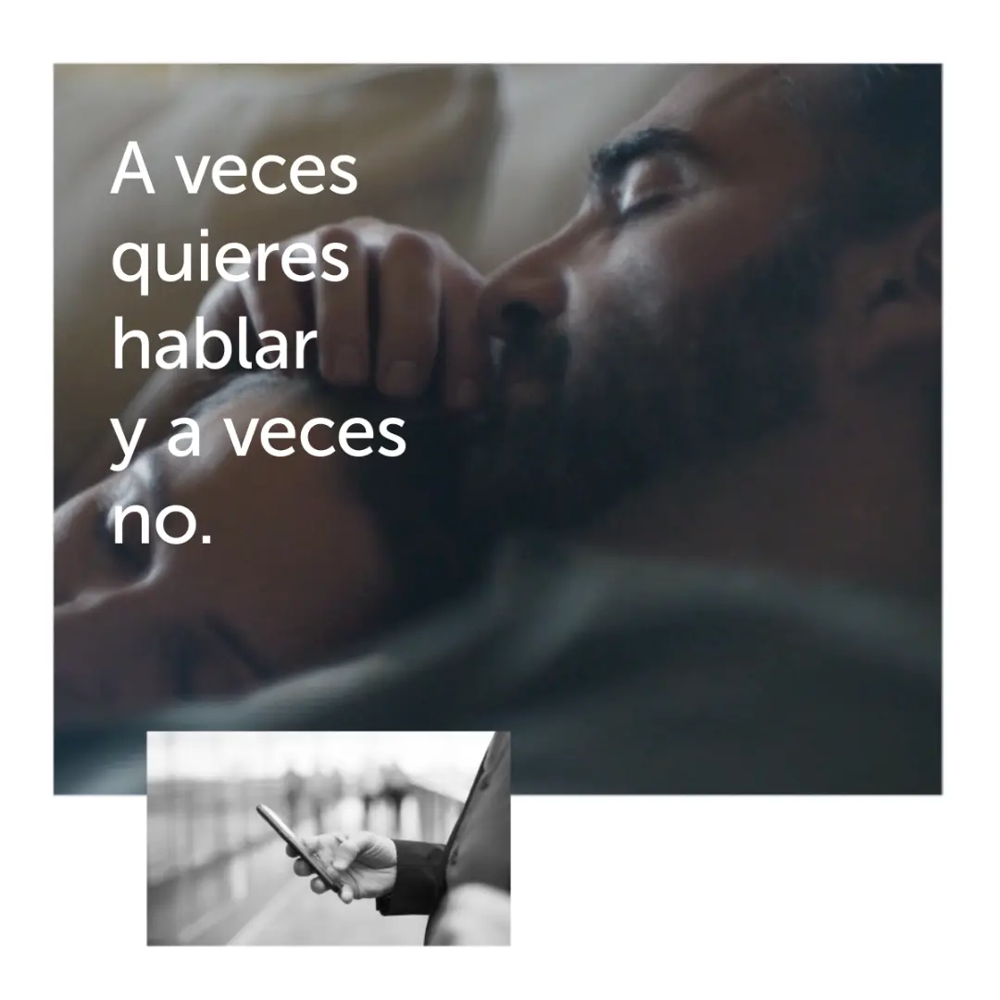
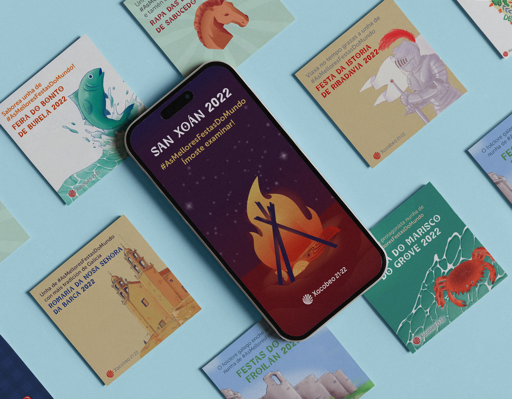

Abanca — ilustración y campañas de captación
Serie ilustrada Xacobeo 21:22 · campaña Brand Days para redes sociales · banners de display · dirección de arte
Qué hice
- Campaña Brand Days ("trae tu nómina y llévate un regalo"). Una vez definido el diseño principal, lo adaptaba a cada mercado y formato, buscando y editando fotos para que cada pieza contara la historia de Abanca.
- Serie ilustrada Xacobeo 21:22. Ilustré las fiestas del Año Xacobeo, como la Feira do Bonito, San Xoán y la fiesta del marisco, cada una adaptada a los formatos de la marca. Mucha libertad creativa, uno de mis proyectos favoritos.
- También. Retoque de fotos, banners, emails, pequeñas webs promocionales.
Cómo funcionaba Idea del equipo creativo → diseño el banner principal → una vez aprobado, elijo las imágenes de apoyo → desarrollo el resto de adaptaciones de formato.
Resultado Piezas de Brand Days y serie ilustrada aprobadas y publicadas en los canales del banco, en una relación larga que abarca desde redes sociales hasta campañas publicitarias.



Brand Days convierte ofertas de nómina y viajes en piezas sociales. Mensaje breve, fotografía real, llamada a la acción clara.

Piezas para redes sociales de la campaña Brand Days — dirección de arte y diseño de cada formato (feed, story, banner).

Serie ilustrada Xacobeo 21:22 para San Xoán 2022 · ilustración y diseño de cada pieza.